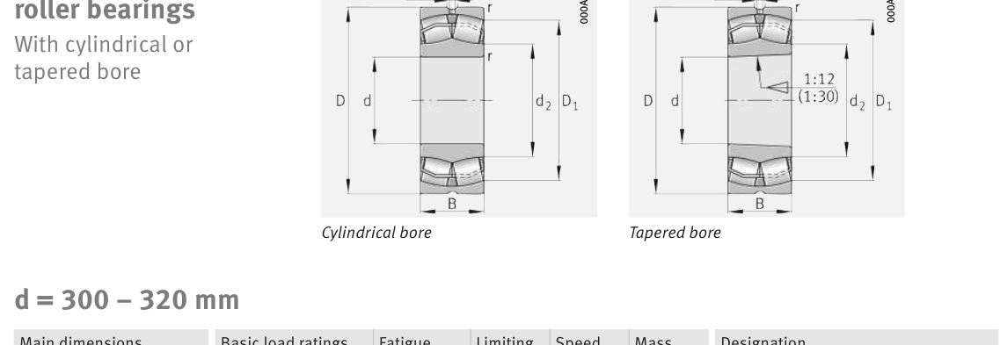

Original catalogue drawing - FAG Schaeffler HR 1, page 728

Scanned from the manufacturer catalogue page listing this part number. All part numbers printed on that table share the same drawing.
Scale cross-section
Blue = inner / outer ring, yellow = rolling element. Drawn to scale from this part's own
dimensions for selection reference only - not a manufacturing or assembly drawing.
Dimension table (mm / inch)
Symbol
Dimension
mm
inch
d
Bore diameter
320
12.5984
D
Outside diameter
480
18.8976
B
Inner-ring / bearing width
160
6.2992
r
Chamfer (min)
4
0.1575
Notes
Weights are given in kg. Load ratings are shown in both the original catalogue units and the converted value (1 N = 0.2248 lbf). Data is provided for selection reference only - confirm against the latest official catalogue before ordering.
Main dimensions
Bore d (mm)
320
Outside dia. D (mm)
480
Width B (mm)
160
Inner-ring shoulder dia. D1 (mm)
422.3
Load ratings & speeds
Basic dynamic load rating Cr (lbs)
663186
Basic static load rating Cor (lbs)
1169007
Basic dynamic load rating Cr (N)
2.95e+06
Basic static load rating C0r (N)
5.2e+06
Fatigue limit load Cur (N)
455000
Factor e
0.3
Factor Y0
2.18
Limiting speed nG (rpm)
1,200
Weight
Weight (kg)
102.0
Mounting dimensions (fillets / shoulders)
Housing fillet r max (mm)
4
Shaft shoulder da (mm)
334.6
Housing shoulder Da (mm)
465.4
Housing fillet ra max (mm)
3
Bearing life (ISO 281 basic rating life)
C / P
Equivalent load P (N)
L10 (106 rev)
L10h at 400 rpm
4
737,500
102
4,233
6
491,667
392
16,354
8
368,750
1,024
42,667
10
295,000
2,154
89,768
15
196,667
8,323
346,811
Basic rating life per ISO 281: L10 = (C/P)10/3 with C = 2,950,000 N. Hours = L10 x 106 / (60n). Life-modification factors for lubrication, contamination and temperature (aISO) are not included.
Source & traceability
Brand
FAG
Source catalogue
FAG / Schaeffler Rolling Bearings HR 1
Catalogue page
p.728 (dimensions)
Load ratings in newtons, fatigue limit load Cur, limiting speed nG and reference speed nB.
Send us the quantity you need and we will come back with price and
lead time, normally within 24 hours. Equivalent parts from other brands can be quoted at the same time.